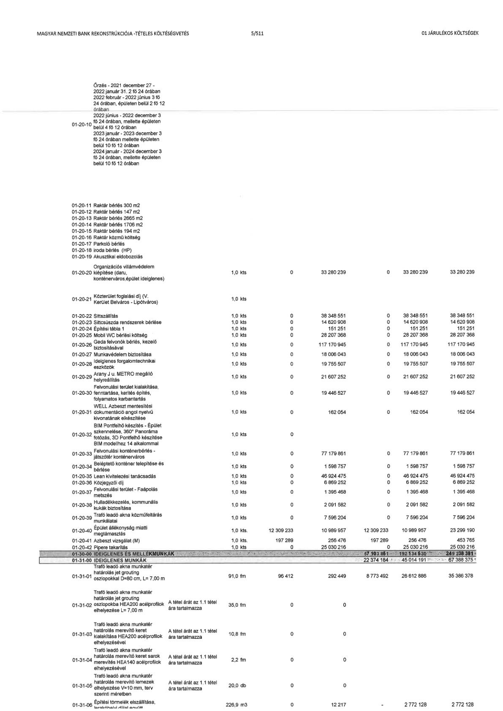

| Tétel | Megjegyzés | Menny. | Egys. | Anyag e.ár (net HUF) | Díj e.ár (net HUF) | Anyag összesen (net HUF) | Díj összesen (net HUF) | Anyag+Díj összesen (net HUF) |
|---|---|---|---|---|---|---|---|---|
| 01-20-10 Őrzés | 2021 december 27 - 2022 január 31. 2 fő 24 órában\n2022 február - 2022 június 3 fő 24 órában, épületen belül 2 fő 12 órában\n2022 június - 2022 december 3 fő 24 órában, mellette épületen belül 4 fő 12 órában\n2023 január - 2023 december 3 fő 24 órában, mellette épületen belül 10 fő 12 órában\n2024 január - 2024 december 3 fő 24 órában, mellette épületen belül 10 fő 12 órában | NaN | NaN | 0 | 0 | 0 | 0 | 0 |
| 01-20-11 Raktár bérlés 300 m2 | NaN | NaN | NaN | 0 | 0 | 0 | 0 | 0 |
| 01-20-12 Raktár bérlés 147 m2 | NaN | NaN | NaN | 0 | 0 | 0 | 0 | 0 |
| 01-20-13 Raktár bérlés 2665 m2 | NaN | NaN | NaN | 0 | 0 | 0 | 0 | 0 |
| 01-20-14 Raktár bérlés 1706 m2 | NaN | NaN | NaN | 0 | 0 | 0 | 0 | 0 |
| 01-20-15 Raktár bérlés 194 m2 | NaN | NaN | NaN | 0 | 0 | 0 | 0 | 0 |
| 01-20-16 Raktár rezsi költség | NaN | NaN | NaN | 0 | 0 | 0 | 0 | 0 |
| 01-20-17 Parkoló bérlés | NaN | NaN | NaN | 0 | 0 | 0 | 0 | 0 |
| 01-20-18 Iroda bérlés (HP) | NaN | NaN | NaN | 0 | 0 | 0 | 0 | 0 |
| 01-20-19 Akusztikai eldobozolás | NaN | NaN | NaN | 0 | 0 | 0 | 0 | 0 |
| 01-20-20 Organizációs villámvédelem kiépítése (daru, konténerváros, épület ideiglenes) | NaN | 1,0 | kts | 0 | 33 280 239 | 0 | 33 280 239 | 33 280 239 |
| 01-20-21 Közterület foglalási díj (V. Kerület Belváros - Lipótváros) | NaN | 1,0 | kts | 0 | 0 | 0 | 0 | 0 |
| 01-20-22 Sitszállítás | NaN | 1,0 | kts | 0 | 38 348 551 | 0 | 38 348 551 | 38 348 551 |
| 01-20-23 Sits csúszda rendszerek bérlése | NaN | 1,0 | kts | 0 | 14 620 908 | 0 | 14 620 908 | 14 620 908 |
| 01-20-24 Építési tábla 1 | NaN | 1,0 | kts | 0 | 151 251 | 0 | 151 251 | 151 251 |
| 01-20-25 Mobil WC bérlési költség | NaN | 1,0 | kts | 0 | 28 207 368 | 0 | 28 207 368 | 28 207 368 |
| 01-20-26 Geda felvonók bérlés, kezelő biztosításával | NaN | 1,0 | kts | 0 | 117 170 945 | 0 | 117 170 945 | 117 170 945 |
| 01-20-27 Munkavédelem biztosítása | NaN | 1,0 | kts | 0 | 18 006 043 | 0 | 18 006 043 | 18 006 043 |
| 01-20-28 Ideiglenes forgalomtechnikai eszközök | NaN | 1,0 | kts | 0 | 19 755 507 | 0 | 19 755 507 | 19 755 507 |
| 01-20-29 Arany J.u. METRÓ megálló helyreálltás | NaN | 1,0 | kts | 0 | 21 607 252 | 0 | 21 607 252 | 21 607 252 |
| 01-20-30 Felvonulási terület kialakítása, fenntartása, kerítés építés, folyamatos karbantartás | NaN | 1,0 | kts | 0 | 19 446 527 | 0 | 19 446 527 | 19 446 527 |
| 01-20-31 WELL Azbeszt mentesítési dokumentáció angol nyelvű kivonatának elkészítése | NaN | 1,0 | kts | 0 | 162 054 | 0 | 162 054 | 162 054 |
| 01-20-32 BIM Portfólió készítés - Épület szkennelése, 360° Panoráma fotózás, 3D Pontfelhő készítése BIM modellhez 14 alkalommal | NaN | 1,0 | kts | 0 | 0 | 0 | 0 | 0 |
| 01-20-33 Felvonulási konténerbérlés - játszótér konténerváros | NaN | 1,0 | kts | 0 | 77 179 861 | 0 | 77 179 861 | 77 179 861 |
| 01-20-34 Beépíthető konténer telepítése és bérlése | NaN | 1,0 | kts | 0 | 1 598 757 | 0 | 1 598 757 | 1 598 757 |
| 01-20-35 Lean kivitelezési tanácsadás | NaN | 1,0 | kts | 0 | 46 924 475 | 0 | 46 924 475 | 46 924 475 |
| 01-20-36 Közjegyzői díj | NaN | 1,0 | kts | 0 | 6 869 252 | 0 | 6 869 252 | 6 869 252 |
| 01-20-37 Felvonulási terület - Faápolás metszés | NaN | 1,0 | kts | 0 | 1 395 468 | 0 | 1 395 468 | 1 395 468 |
| 01-20-38 Hulladékkezelés, kommunális kukák biztosítása | NaN | 1,0 | kts | 0 | 2 091 582 | 0 | 2 091 582 | 2 091 582 |
| 01-20-39 Trafó leadó akna közműfeltárás munkálatai | NaN | 1,0 | kts | 0 | 7 596 204 | 0 | 7 596 204 | 7 596 204 |
| 01-20-40 Épület állékonyság miatti megerősítés | NaN | 1,0 | kts | 12 309 233 | 10 989 957 | 12 309 233 | 10 989 957 | 23 299 190 |
| 01-20-41 Azbeszt vizsgálat (M) | NaN | 1,0 | kts | 197 289 | 256 476 | 197 289 | 256 476 | 453 765 |
| 01-20-42 Pipere takarítás | NaN | 1,0 | kts | 0 | 25 030 216 | 0 | 25 030 216 | 25 030 216 |
| 01-30-00 IDEIGLENES ÉS MELLÉKMUNKÁK | NaN | NaN | NaN | 0 | 0 | 57 103 851 | 192 134 530 | 249 238 381 |
| 01-31-00 IDEIGLENES MUNKÁK | NaN | NaN | NaN | 0 | 0 | 22 374 184 | 45 014 191 | 67 388 375 |
| 01-31-01 Trafó leadó akna munkatér határolás jet grouting oszlopokkal D=80 cm, L= 7,00 m | NaN | 91,0 | fm | 96 412 | 292 449 | 8 773 492 | 26 612 886 | 35 386 378 |
| 01-31-02 Trafó leadó akna munkatér határolás jet grouting oszlopokba HEA200 acélprofilok elhelyezése L= 7,00 m | A tétel árát az 1.1 tétel ára tartalmazza | 35,0 | fm | 0 | 0 | 0 | 0 | 0 |
| 01-31-03 Trafó leadó akna munkatér határolás merevítő keret kialakítása HEA200 acélprofilok elhelyezésével | A tétel árát az 1.1 tétel ára tartalmazza | 10,8 | fm | 0 | 0 | 0 | 0 | 0 |
| 01-31-04 Trafó leadó akna munkatér határolás merevítő keret sarok merevítés HEA140 acélprofilok elhelyezésével | A tétel árát az 1.1 tétel ára tartalmazza | 2,2 | fm | 0 | 0 | 0 | 0 | 0 |
| 01-31-05 Trafó leadó akna munkatér határolás merevítő lemezek elhelyezése V=10 mm, terv szerinti méretben | A tétel árát az 1.1 tétel ára tartalmazza | 20,0 | db | 0 | 0 | 0 | 0 | 0 |
| 01-31-06 Építési törmelék elszállítása, lerakóhelyi díjjal együtt | NaN | 226,9 | m3 | 0 | 12 217 | 0 | 2 772 128 | 2 772 128 |
